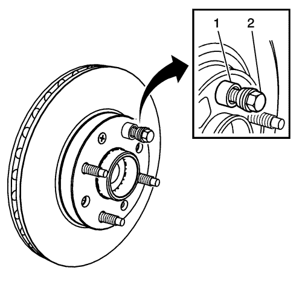
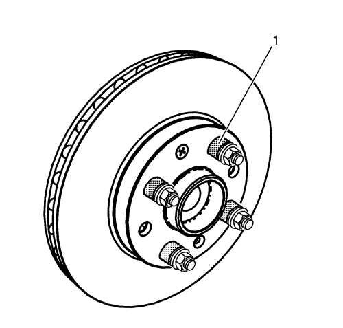

Corrección del alabeo montado del rotor de freno - Indexación
Herramientas especiales
CH-45101-100 Arandelas cónicas de rotor de freno
Si desea informarse sobre herramientas regionales equivalentes, consultar Herramientas especiales .
Advertencia: Consulte Advertencia relacionada con el polvo procedente de los frenos en la sección Prólogo

Nota:
| • | La variación del grosor del rotor del freno SE DEBE comprobar ANTES de comprobar el alabeo montado (LRO). La variación de grosor que exceda el nivel máximo aceptable puede provocar pulsaciones en el freno. Consultar Medición de la variación de grosor del rotor de freno . |
| • | El LRO del rotor de freno montado que supere el valor máximo permitido especificado puede provocar una variación del grosor del rotor de freno con el tiempo, normalmente a los 4.800 - 11.300 km (3.000 - 7.000 millas). Consultar Medición del alabeo montado del rotor de freno . |
- Desmonte las arandelas cónicas CH-45101-100 del rotor de freno y las tuercas de taco que se montaron durante el proceso de medición del LRO del rotor montado.
- Revise la superficie de conexión de la brida de cubo/eje y el rotor de freno para garantizar que no queden partículas o restos extraños.
- Indexe el rotor de freno en una orientación diferente a la brida cubo/eje.
- Sujete firmemente el rotor en su sitio, contra la brida de cubo/eje, y monte una de las arandelas cónicas CH-45101-100 (1) del rotor de freno y una tuerca de taco (2) en el espárrago de rueda que quede en la posición superior.
- Continúe sujetando la fijación del rotor y apriete firmemente a mano la tuerca de saliente.

- Monte el resto de las arandelas cónicas CH-45101-100 del rotor de freno y las tuercas de taco en los espárragos de rueda (1), y apriete bien las tuercas, con la mano, en la secuencia de apriete.
- Apriete las tuercas de taco en la secuencia indicada, para fijar bien el rotor. Consultar Desmontaje y montaje de la rueda y el neumático .
- Medición del LRO montado del rotor de freno. Consultar Medición del alabeo montado del rotor de freno .
- Compare la cantidad de cambio entre esta medida y la medida original.
- Si esta medida está dentro de las especificaciones, proceda con el paso 14.
- Si esta medida todavía supera las especificaciones, repita los pasos 1-9 hasta que se obtenga la mejor medida de LRO montado.
- Marque la ubicación final del rotor con relación a los pernos de rueda si la orientación es distinta de la original.
- Si la medida del LRO montado del rotor de freno todavía excede de la máxima permisible en la especificación, consulte Corrección del alabeo montado del rotor de freno .
- Si el LRO del rotor de freno montado está dentro de los valores especificados, monte la pinza de freno y pise el pedal del freno varias veces para que el rotor encaje en su posición correcta, antes de desmontar las arandelas cónicas CH-45101-100 del rotor de freno y las tuercas de taco.
| © Copyright Chevrolet Europe. Reservados todos los derechos |